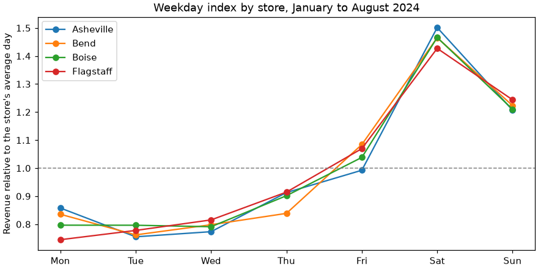

📡 Lesson 1.3: Broadcasting
Learn the two short rules that let NumPy combine a table with a row, a column or a single number, and you can compare every store with its own normal in one line.
🎯 Learning Objectives
By the end of this lesson, you will be able to:
- State the broadcasting rules and use them to predict the shape of a result, or that an operation will fail
- Combine a 2-D table with a row of values and with a column of values
- Reshape an array for broadcasting with
np.newaxis,reshapeandkeepdims=True - Build a grid of every combination from two 1-D arrays
- Recognize the broadcasting mistakes that raise no error, and catch them by checking shapes
In This Lesson
🧩 The Problem Broadcasting Solves
Lesson 1.2 gave you a rule: element-by-element arithmetic needs arrays that line up, and np.arange(7) + np.arange(4) fails. Yet you have been breaking that rule since Lesson 1.1. week * 2 combines seven numbers with one. Nobody complained.
NumPy allowed it because the intent is obvious: use the 2 for every element. Broadcasting is the name for that courtesy, and it extends well beyond single numbers. Boise takes in almost twice what Asheville does on a typical day, so comparing their raw revenue tells you only that Boise is bigger. To ask a better question ("was this a good day for this store?") you need to subtract each store's own average from its own column of a table. That is a table combined with a row, and broadcasting makes it one line.
💡 Mental Model: The Rubber Stamp
Picture a paper form with seven lines, and a rubber stamp that prints one line of four numbers. To apply the stamp to the whole form you press it on line 1, then line 2, and so on down the page. The stamp does not get longer. It is reused wherever it is needed.
Broadcasting is NumPy doing the stamping for you: when one array is missing a dimension, or has length 1 along it, NumPy reuses it along that dimension to match the other array.
Start a new notebook with the loading helper from Lesson 1.2, and rebuild the first week of revenue as a table of 7 days by 4 stores (Asheville, Bend, Boise, Flagstaff).
import numpy as np
def load(col, dtype=float):
"""Read one column of daily_sales.csv into an array."""
return np.genfromtxt("data/daily_sales.csv", delimiter=",",
skip_header=1, usecols=col, dtype=dtype)
revenue = load(5)
week1 = revenue[:28].reshape(7, 4)
print(week1)
print(week1.shape)Output
[[ 5017.07 4132.92 5962. 3061.66]
[ 3605.81 3675.57 6583.13 3575.24]
[ 4265.55 6275.05 3866.59 3974.93]
[ 4531.48 5487.11 7667.88 4329.55]
[ 7359.82 4755.15 9570.46 5606.62]
[ 6802.53 7083.36 12388.57 6257.02]
[ 4114.59 6719.33 9361.59 5964. ]]
(7, 4)The simplest broadcast is the one you already know: a table and a single number. The number is stamped onto every cell.
print((week1 / 1000).round(1)) # revenue in thousands of dollarsOutput
[[ 5. 4.1 6. 3.1]
[ 3.6 3.7 6.6 3.6]
[ 4.3 6.3 3.9 4. ]
[ 4.5 5.5 7.7 4.3]
[ 7.4 4.8 9.6 5.6]
[ 6.8 7.1 12.4 6.3]
[ 4.1 6.7 9.4 6. ]]➡️ A Table and a Row
Each store's average for the week is one number per column, so four numbers in all.
store_mean = week1.mean(axis=0)
print(store_mean.round(2))
print(store_mean.shape)Output
[5099.55 5446.93 7914.32 4681.29]
(4,)Now subtract those four numbers from the 7×4 table.
diff = week1 - store_mean
print(diff.round(0))
print(diff.shape)Output
[[ -82. -1314. -1952. -1620.]
[-1494. -1771. -1331. -1106.]
[ -834. 828. -4048. -706.]
[ -568. 40. -246. -352.]
[ 2260. -692. 1656. 925.]
[ 1703. 1636. 4474. 1576.]
[ -985. 1272. 1447. 1283.]]
(7, 4)NumPy stamped the row of four averages onto each of the seven rows: Asheville's average was subtracted from everything in Asheville's column, Bend's from Bend's, and so on. Every cell now reads "dollars above or below this store's own average". The raw table said Boise's Saturday ($12,389) was far ahead of Bend's ($7,083). This table says both were the best day of the week for their store, and by how much.
Dividing instead of subtracting gives a ratio, which is often easier to read across stores of different sizes:
print((week1 / store_mean).round(2))Output
[[0.98 0.76 0.75 0.65]
[0.71 0.67 0.83 0.76]
[0.84 1.15 0.49 0.85]
[0.89 1.01 0.97 0.92]
[1.44 0.87 1.21 1.2 ]
[1.33 1.3 1.57 1.34]
[0.81 1.23 1.18 1.27]]A value of 1.57 means "57% above this store's weekly average". Every store's best day now stands out on the same scale (Asheville's Friday at 1.44, and Saturday at 1.30 to 1.57 for the other three), which the raw dollars hid.
⬇️ A Table and a Column
Next question: of each day's total across the four stores, what share did each store take? That needs every row divided by its own total. The row totals come from axis=1.
day_total = week1.sum(axis=1)
print(day_total)
print(day_total.shape)Output
[18173.65 17439.75 18382.12 22016.02 27292.05 32531.48 26159.51]
(7,)Seven totals, one per day. Dividing the table by them looks like it should work the same way as before. It does not:
share = week1 / day_totalError
ValueError: operands could not be broadcast together with shapes (7,4) (7,)The stamp analogy explains why. day_total is a flat run of seven numbers. NumPy can only treat a flat array as a row, and a row of seven does not fit a table that is four wide. What you need is seven numbers standing as a column: shape (7, 1), seven rows and one column.
The easiest way to get that is to ask the aggregation to keep the axis it collapsed, with keepdims=True:
day_total = week1.sum(axis=1, keepdims=True)
print(day_total)
print(day_total.shape)Output
[[18173.65]
[17439.75]
[18382.12]
[22016.02]
[27292.05]
[32531.48]
[26159.51]]
(7, 1)share = week1 / day_total
print(share.round(3))
print(share.sum(axis=1)) # every row should add up to 1Output
[[0.276 0.227 0.328 0.168]
[0.207 0.211 0.377 0.205]
[0.232 0.341 0.21 0.216]
[0.206 0.249 0.348 0.197]
[0.27 0.174 0.351 0.205]
[0.209 0.218 0.381 0.192]
[0.157 0.257 0.358 0.228]]
[1. 1. 1. 1. 1. 1. 1.]Now the column of totals is stamped across the four columns: each row is divided by its own total. Boise took 32.8% of Monday's revenue and 38.1% of Saturday's. The last line is a check worth making: shares of a whole must sum to 1 (give or take floating-point dust such as 0.9999999999999999).
✅ The Pattern to Remember
To work column by column (per store), combine the table with a row: table - table.mean(axis=0) just works.
To work row by row (per day), combine the table with a column: table / table.sum(axis=1, keepdims=True).
📜 The Rules
You do not have to guess when broadcasting will work. NumPy follows two rules, and you can run them in your head by writing the two shapes one above the other.
💡 The Broadcasting Rules
- Line the shapes up from the right. If one shape is shorter, imagine 1s added on its left until both have the same number of entries.
- Compare each pair of lengths. A pair is compatible if the two lengths are equal, or if one of them is 1. The array with length 1 is reused along that axis.
If every pair is compatible, the operation works, and the result takes the larger length from each pair. If any pair fails, you get the "could not be broadcast together" error.
Example 3 is the error from the previous section, and now you can see exactly why it happened: shapes are matched from the right, so the 7 of the flat array was compared with the 4 columns, not with the 7 rows.
You can ask NumPy to apply the rules without doing any arithmetic. np.broadcast_shapes takes shapes and returns the shape of the result, or raises the same error an operation would.
print(np.broadcast_shapes((7, 4), (4,)))
print(np.broadcast_shapes((7, 4), (7, 1)))
print(np.broadcast_shapes((7, 4), (1,)))
print(np.broadcast_shapes((3, 1), (1, 5)))Output
(7, 4)
(7, 4)
(7, 4)
(3, 5)The last line is new: both arrays have a 1, in different places, and both are stretched. A column of 3 meets a row of 5 and the result is a 3×5 table. You will put that to work in a moment.
🔧 Three Ways to Add an Axis
Most broadcasting work comes down to one move: turning a flat array of n values into a column of shape (n, 1). There are three ways to do it, and you will meet all three in other people's code.
totals = week1.sum(axis=1) # flat: shape (7,)
col_a = totals[:, np.newaxis] # index with a new axis
col_b = totals.reshape(-1, 1) # reshape; -1 means "work this out for me"
col_c = week1.sum(axis=1, keepdims=True) # never flatten in the first place
print(totals.shape, col_a.shape, col_b.shape, col_c.shape)
print(np.array_equal(col_a, col_b), np.array_equal(col_b, col_c))Output
(7,) (7, 1) (7, 1) (7, 1)
True True| Technique | Use it when |
|---|---|
keepdims=True | The array comes from an aggregation (sum, mean, max...). This is the least error-prone choice. |
arr[:, np.newaxis] | You already have a flat array and want it as a column. arr[np.newaxis, :] makes a row of shape (1, n). |
arr.reshape(-1, 1) | Same result as above. Many people find it easier to read. |
np.newaxis is simply another name for None, so totals[:, None] is the same thing, and you will often see it written that way. None of the three copies any data: each is a view with a different shape, as reshape was in Lesson 1.1.
🔲 Column Meets Row: A Grid
When a column of shape (n, 1) meets a row of shape (m,), both are stretched and you get an n×m table holding every combination. This is the vectorized replacement for a loop inside a loop.
Pinecrest is planning a sale and wants to see four tent prices under three possible discounts.
prices = np.array([299.95, 217.95, 449.00, 129.50]) # four products
discounts = np.array([0.10, 0.15, 0.20]) # three scenarios
sale_price = prices[:, np.newaxis] * (1 - discounts)
print(sale_price.shape)
print(sale_price.round(2))Output
(4, 3)
[[269.96 254.96 239.96]
[196.16 185.26 174.36]
[404.1 381.65 359.2 ]
[116.55 110.08 103.6 ]]Rows are products, columns are discount levels. Check the shapes with the rules: (4, 1) against (3,). From the right, 1 meets 3 (compatible, result 3). Then 4 meets a missing axis (compatible, result 4). Result: (4, 3).
Any operator or two-input ufunc builds a grid this way. Here is a table that answers "is product i still above $200 under discount j?", and a multiplication table for good measure.
print(sale_price > 200)
n = np.arange(1, 6)
print(n[:, np.newaxis] * n)Output
[[ True True True]
[False False False]
[ True True True]
[False False False]]
[[ 1 2 3 4 5]
[ 2 4 6 8 10]
[ 3 6 9 12 15]
[ 4 8 12 16 20]
[ 5 10 15 20 25]]📏 Putting Columns on One Scale
One of the most common uses of broadcasting in data work is standardizing: subtract each column's mean and divide by its standard deviation (a measure of how spread out the values are, which Module 4 explains in full). The result is called a z-score. It answers "how many standard deviations above or below its own average is this value?", and that puts columns of very different sizes on a common scale.
mean = week1.mean(axis=0)
std = week1.std(axis=0)
z = (week1 - mean) / std
print(z.round(2))
print(np.abs(z.mean(axis=0)).round(10)) # each column now averages 0
print(z.std(axis=0)) # ...with a standard deviation of 1Output
[[-0.06 -1.08 -0.75 -1.39]
[-1.13 -1.46 -0.51 -0.95]
[-0.63 0.68 -1.56 -0.61]
[-0.43 0.03 -0.1 -0.3 ]
[ 1.71 -0.57 0.64 0.8 ]
[ 1.29 1.35 1.73 1.36]
[-0.75 1.05 0.56 1.1 ]]
[0. 0. 0. 0.]
[1. 1. 1. 1.]Two broadcasts happen in (week1 - mean) / std: the row of four means is stamped down the table, then the row of four standard deviations. On this scale Boise's Saturday is 1.73 standard deviations above Boise's average, and Flagstaff's Saturday is 1.36 above Flagstaff's. You can now compare them directly.
💡 Why This Matters Later
Standardizing appears throughout statistics and machine learning: z-scores for spotting outliers (Module 4), and putting features on one scale before fitting a model (Lesson 2.9). Each time, it is this one line with axis=0.
💰 What Broadcasting Costs
Does NumPy really build seven copies of the row before subtracting? No. The stamp is reused, not duplicated: the smaller array is read again and again from the same memory. np.broadcast_to lets you see the stretched version, and it turns out to be a view.
stretched = np.broadcast_to(store_mean, (7, 4))
print(stretched.shape)
print(np.shares_memory(stretched, store_mean))
print(store_mean.nbytes, "bytes of real data behind", stretched.size, "values")Output
(7, 4)
True
32 bytes of real data behind 28 valuesSo the inputs cost nothing extra. The result is a different matter: it is a real, full-size array. That is fine for a 7×4 table, and it is exactly what you want for a 4×3 price grid. It becomes a problem when a grid is created by accident.
a = np.arange(20_000)
col = a[:, np.newaxis]
print(np.broadcast_shapes(a.shape, col.shape))
print(f"{20_000 * 20_000 * 8 / 1e9:.1f} GB needed for the result")Output
(20000, 20000)
3.2 GB needed for the result⚠️ A Flat Array Plus a Column Is a Grid
Combining two arrays of 20,000 values, where one happens to be a column, would produce 400 million numbers and ask for 3.2 GB. The code above only asks for the shape, so nothing bad happened. When a simple subtraction is suddenly slow or your computer starts to struggle, print both shapes. The mistake is shown in full in the next section.
⚠️ Common Mistakes
Broadcasting has one kind of mistake that announces itself and several that do not. The quiet ones are the reason experienced people print .shape so often.
1. A Flat Array Where a Column Was Needed
row_mean = week1.mean(axis=1)
centered = week1 - row_meanError
ValueError: operands could not be broadcast together with shapes (7,4) (7,)What it means: the message lists the two shapes. Read them from the right: 4 meets 7, and neither is 1. Fix: keep the axis so the means form a column: week1.mean(axis=1, keepdims=True).
2. The Accidental Grid
You have four actual values and four predictions, and you want the four errors. One of the arrays came out of some other step as a column.
actual = np.array([100.0, 200.0, 300.0, 400.0])
predicted = np.array([[110.0], [190.0], [330.0], [380.0]]) # shape (4, 1)
errors = actual - predicted
print(errors.shape)
print(errors)
print(np.abs(errors).mean()) # the average size of an errorOutput (16 numbers instead of 4, and no error)
(4, 4)
[[ -10. 90. 190. 290.]
[ -90. 10. 110. 210.]
[-230. -130. -30. 70.]
[-280. -180. -80. 20.]]
126.25What happened: (4,) against (4, 1) is a row meeting a column, so NumPy built the grid of every actual value minus every prediction. The average of that grid is a plausible-looking number that means nothing. The right errors are -10, 10, -30 and 20, and their average size is 17.5. Fix: make the shapes match before combining, for example with predicted.ravel(), which flattens any array to 1-D. And check: four values in should mean four errors out.
errors = actual - predicted.ravel()
print(errors.shape, errors, np.abs(errors).mean())Output
(4,) [-10. 10. -30. 20.] 17.53. The Square Table That Hides a Wrong Axis
Take the first four days only, so the table is 4×4, and try to subtract each day's mean from its row.
square = week1[:4] # 4 days x 4 stores
wrong = square - square.mean(axis=1) # flat array of 4 day-means
right = square - square.mean(axis=1, keepdims=True)
print(np.abs(wrong.sum(axis=1)).round(2)) # should be zeros if the rows were centered
print(np.abs(right.sum(axis=1)).round(2))Output (the first line should be all zeros and is not)
[ 829.24 1563.14 620.76 3013.13]
[0. 0. 0. 0.]What happened: with 7 rows this was the error in mistake 1. With 4 rows and 4 columns, the four day-means happen to fit as a row, so NumPy subtracted day 1's mean from column 1, day 2's mean from column 2, and so on. No error, wrong answer. Fix: use keepdims=True whenever you aggregate along axis=1 and combine the result with the table. Then the code is right for every shape, square or not.
4. Updating in Place with a Larger Result
adjust = np.zeros(4)
adjust += week1Error
ValueError: non-broadcastable output operand with shape (4,) doesn't match the broadcast shape (7,4)What it means: adjust + week1 is a legal broadcast with a 7×4 result, but += has to store that result back into adjust, which only has room for 4 values. An array cannot grow. Fix: write adjust = adjust + week1 if you want the new, larger array, or reverse the roles if you meant to update the table: week1_copy += adjust.
🛠️ Project: The Weekday Index
"Saturdays are our best day" is common knowledge at Pinecrest. Your job is to put a number on it, store by store, in a way that is fair to stores of different sizes: a weekday index where 1.00 means "an average day for this store". You will then use z-scores to find the days that were unusual for their own store. Work in a new notebook called lesson_1_3_project or a script called weekday_index.py. Allow about 35 minutes.
🛠️ Step 1: Build a days-by-stores table (6 min)
A reshape only works if no rows are missing. The file has four rows for every date from January 1 until August 11, 2024 (Bend's export failed the next day). That is 224 days, which is exactly 32 weeks, or 896 rows. Check that claim before relying on it.
import numpy as np
def load(col, dtype=float):
return np.genfromtxt("data/daily_sales.csv", delimiter=",",
skip_header=1, usecols=col, dtype=dtype)
dates = load(0, dtype="datetime64[D]")
stores = load(1, dtype=str)
revenue = load(5)
n_days = 224
print(dates[0], "to", dates[n_days * 4 - 1])
print(stores[:n_days * 4].reshape(n_days, 4)[[0, 100, 223]]) # three rows, to check the order
table = revenue[:n_days * 4].reshape(n_days, 4)
day = dates[:n_days * 4].reshape(n_days, 4)[:, 0] # one date per row
store_names = stores[:4]
print(table.shape, day.shape)
print(np.isnan(table).sum(axis=0), "missing values per store")Output
2024-01-01 to 2024-08-11
[['Asheville' 'Bend' 'Boise' 'Flagstaff']
['Asheville' 'Bend' 'Boise' 'Flagstaff']
['Asheville' 'Bend' 'Boise' 'Flagstaff']]
(224, 4) (224,)
[1 1 0 1] missing values per storeEvery row of the reshaped store names reads Asheville, Bend, Boise, Flagstaff, so each column of table is one store. Three revenues are missing, so use the nan-aware functions from here on.
🛠️ Step 2: Each day relative to its store's normal (5 min)
Compute each store's mean daily revenue (one number per column), then divide the table by that row. A table and a row: this broadcasts as it stands.
store_mean = np.nanmean(table, axis=0)
print(store_names)
print(store_mean.round(2))
ratio = table / store_mean
print(ratio.shape)
print(ratio[:3].round(2))Output
['Asheville' 'Bend' 'Boise' 'Flagstaff']
[5697.45 6650.89 9108.3 5895.63]
(224, 4)
[[0.88 0.62 0.65 0.52]
[0.63 0.55 0.72 0.61]
[0.75 0.94 0.42 0.67]]🛠️ Step 3: The weekday index (8 min)
224 days is 32 whole weeks starting on a Monday, so the table can be reshaped again into three dimensions: 32 weeks × 7 weekdays × 4 stores. Averaging over axis 0 (the weeks) leaves a 7×4 table: the typical ratio for each weekday at each store.
by_week = ratio.reshape(32, 7, 4) # (week, weekday, store)
index = np.nanmean(by_week, axis=0) # collapse the weeks
print(index.shape)
day_names = ["Mon", "Tue", "Wed", "Thu", "Fri", "Sat", "Sun"]
print(f"{'':<5}" + "".join(f"{s:>11}" for s in store_names))
for name, row in zip(day_names, index):
print(f"{name:<5}" + "".join(f"{v:>11.2f}" for v in row))Output
(7, 4)
Asheville Bend Boise Flagstaff
Mon 0.86 0.84 0.80 0.74
Tue 0.76 0.76 0.80 0.78
Wed 0.77 0.80 0.79 0.82
Thu 0.91 0.84 0.90 0.91
Fri 0.99 1.08 1.04 1.07
Sat 1.50 1.47 1.47 1.43
Sun 1.21 1.22 1.21 1.24There is the number. A Saturday is worth about one and a half average days at every store, and Monday to Wednesday run at about 80% of average. The four columns are strikingly similar: once size is removed, the stores share one weekly rhythm.
🛠️ Step 4: Draw it (5 min)
A chart makes the similarity plain. Plotting gets its own module later, so for now type this as given: passing a 7×4 array to ax.plot draws one line per column.
import matplotlib.pyplot as plt
fig, ax = plt.subplots(figsize=(8, 4), layout="constrained")
ax.plot(day_names, index, marker="o", label=store_names)
ax.axhline(1.0, color="gray", linewidth=1, linestyle="--")
ax.set_ylabel("Revenue relative to the store's average day")
ax.set_title("Weekday index by store, January to August 2024")
ax.legend()
plt.show()
🛠️ Step 5: Days that were unusual for their store (8 min)
Standardize each column, then look for z-scores above 3: days more than three standard deviations above that store's own mean. np.argwhere returns the row and column of every True in a 2-D mask.
z = (table - np.nanmean(table, axis=0)) / np.nanstd(table, axis=0)
hits = np.argwhere(z > 3)
print(len(hits), "store-days with z above 3")
for r, c in hits:
print(day[r], f"{store_names[c]:<10} ${table[r, c]:>10,.2f} z = {z[r, c]:.1f}")Output
13 store-days with z above 3
2024-05-24 Boise $ 19,117.36 z = 3.1
2024-05-24 Flagstaff $ 12,887.57 z = 3.2
2024-05-25 Asheville $ 14,461.42 z = 4.3
2024-05-25 Bend $ 17,442.78 z = 4.5
2024-05-25 Boise $ 22,093.08 z = 4.1
2024-05-25 Flagstaff $ 14,659.75 z = 4.0
2024-05-26 Asheville $ 12,891.16 z = 3.5
2024-05-26 Bend $ 14,489.47 z = 3.3
2024-06-01 Asheville $ 12,482.27 z = 3.3
2024-06-22 Boise $ 18,905.50 z = 3.1
2024-06-23 Asheville $ 12,538.90 z = 3.3
2024-07-06 Bend $ 14,781.39 z = 3.4
2024-07-13 Bend $ 13,794.14 z = 3.0Eight of the thirteen fall on May 24 to 26, 2024, the Memorial Day sale weekend, and all four stores appear there. The other five are summer weekend days. Notice what the z-score did for you. Asheville's $12,482 on June 1 is less than an average Saturday at Boise, yet it is correctly flagged as extraordinary for Asheville. A single dollar threshold for all four stores could never do that.
🛠️ Step 6: Each store's share of the day (3 min)
Finish with a table and a column: divide each row by its total. np.nansum accepts keepdims=True like every other aggregation.
share = table / np.nansum(table, axis=1, keepdims=True)
print(np.nanmean(share, axis=0).round(3))
print(np.nanmean(share[:112], axis=0).round(3), "first 16 weeks")
print(np.nanmean(share[112:], axis=0).round(3), "last 16 weeks")Output
[0.21 0.244 0.334 0.215]
[0.216 0.247 0.331 0.21 ] first 16 weeks
[0.203 0.242 0.337 0.22 ] last 16 weeksBoise takes about a third of store revenue. (On the three days with a missing value, the other stores' shares are slightly overstated, because the total is short. With 3 days in 224 the effect is negligible, but it is the kind of thing to note in a real report.)
✅ Project Completion Checklist
tablehas shape(224, 4), and you checked that its columns really are the four storesratiowas made with a table-and-row broadcast and has the same shape astable- Your weekday index is a 7×4 table and shows Saturday near 1.5 at every store
- Your chart shows four lines that nearly overlap
- Your z-score search finds 13 store-days, eight of them on the Memorial Day sale weekend
- Your share table was made with
keepdims=True, and you can explain why it is needed
🏋️ Hands-on Exercises
Before running each one, write the shapes one above the other and predict the shape of the result. That habit is the skill.
🏋️ Exercise 1: Row, Then Column
Here are the units sold on three days (rows) at four stores (columns). Staff earn a bonus per unit that differs by store: [0.50, 0.40, 0.60, 0.50] dollars. (a) Compute the bonus table. (b) Day 3 was a holiday and pays double: multiply each day by [1, 1, 2]. (c) Print the total bonus per store.
units3 = np.array([[110, 105, 148, 69],
[ 88, 84, 152, 82],
[103, 133, 90, 92]])💡 Hint
The per-store rates have shape (4,) and broadcast as a row. The per-day multipliers have shape (3,), which would be compared with the 4 columns: they need to become a column of shape (3, 1).
✅ Solution
units3 = np.array([[110, 105, 148, 69],
[ 88, 84, 152, 82],
[103, 133, 90, 92]])
rate = np.array([0.50, 0.40, 0.60, 0.50])
multiplier = np.array([1, 1, 2])
bonus = units3 * rate # (3, 4) with (4,)
bonus = bonus * multiplier[:, np.newaxis] # (3, 4) with (3, 1)
print(bonus)
print(bonus.sum(axis=0))Output
[[ 55. 42. 88.8 34.5]
[ 44. 33.6 91.2 41. ]
[103. 106.4 108. 92. ]]
[202. 182. 288. 167.5]🏋️ Exercise 2: Predict the Shape
For each pair of shapes, predict the result (or that it fails), then check with np.broadcast_shapes: (a) (5, 3) and (3,), (b) (5, 3) and (5,), (c) (5, 1) and (1, 3), (d) (2, 5, 3) and (5, 1), (e) (6,) and (6, 1).
💡 Hint
Right-align the shapes. For (d), write (5, 1) under the last two entries of (2, 5, 3).
✅ Solution
pairs = [((5, 3), (3,)), ((5, 3), (5,)), ((5, 1), (1, 3)), ((2, 5, 3), (5, 1)), ((6,), (6, 1))]
for s1, s2 in pairs:
try:
print(s1, s2, "gives", np.broadcast_shapes(s1, s2))
except ValueError:
print(s1, s2, "cannot be broadcast")Output
(5, 3) (3,) gives (5, 3)
(5, 3) (5,) cannot be broadcast
(5, 1) (1, 3) gives (5, 3)
(2, 5, 3) (5, 1) gives (2, 5, 3)
(6,) (6, 1) gives (6, 6)(b) fails for the same reason as the flat day_total: the 5 is compared with the 3. (e) is the accidental grid: legal, and rarely what you meant.
🏋️ Exercise 3: Scale Every Store from 0 to 1
Using the project's table (224 days × 4 stores), rescale each store's column so its smallest day becomes 0 and its largest becomes 1: (value - min) / (max - min), with the min and max taken per store. Confirm that every column of the result has a minimum of 0 and a maximum of 1. Remember the missing values.
💡 Hint
np.nanmin(table, axis=0) and np.nanmax(table, axis=0) each give a row of four numbers, which broadcast against the table with no reshaping.
✅ Solution
low = np.nanmin(table, axis=0)
high = np.nanmax(table, axis=0)
scaled = (table - low) / (high - low)
print(scaled.shape)
print(np.nanmin(scaled, axis=0), np.nanmax(scaled, axis=0))
print(scaled[:3].round(3))Output
(224, 4)
[0. 0. 0. 0.] [1. 1. 1. 1.]
[[0.218 0.091 0.154 0.077]
[0.101 0.06 0.187 0.118]
[0.155 0.237 0.045 0.15 ]]🏋️ Exercise 4: How Alike Are the Stores? (Stretch)
The project's index is a 7×4 table: one weekly profile per store, in columns. Build a 4×4 table whose cell (i, j) is the mean absolute difference between store i's profile and store j's profile. Which two stores have the most similar weekly rhythm? Do it with broadcasting and no loop.
💡 Hint
Add an axis in two different places so that every store is paired with every store: index[:, :, np.newaxis] has shape (7, 4, 1) and index[:, np.newaxis, :] has shape (7, 1, 4). Their difference has shape (7, 4, 4). Then collapse the weekday axis.
✅ Solution
gap = index[:, :, np.newaxis] - index[:, np.newaxis, :] # (7, 4, 1) with (7, 1, 4)
print(gap.shape)
distance = np.abs(gap).mean(axis=0) # collapse the 7 weekdays
print(store_names)
print(distance.round(3))
far = np.where(distance == 0, np.inf, distance) # ignore each store against itself
i, j = np.unravel_index(far.argmin(), far.shape)
print("most alike:", store_names[i], "and", store_names[j])Output
(7, 4, 4)
['Asheville' 'Bend' 'Boise' 'Flagstaff']
[[0. 0.039 0.031 0.053]
[0.039 0. 0.029 0.039]
[0.031 0.029 0. 0.03 ]
[0.053 0.039 0.03 0. ]]
most alike: Bend and BoiseThe diagonal is zero (every store is identical to itself) and the table is symmetric. np.unravel_index converts the flat position that argmin returns into a row and a column. Measuring how far apart two rows of numbers are is the idea of a distance, and Lesson 1.5 gives you sharper tools for it.
🎯 Quick Quiz
🎯 Check Your Understanding
Question 1: An array of shape (5, 3) is added to an array of shape (3,). What is the result?
Question 2: What does this print?
q2a = np.array([1, 2, 3])
q2b = np.array([[10], [20]])
print((q2a + q2b).shape)Question 3: t has shape (7, 4). Which expression divides every row by that row's total?
Question 4: actual has shape (100,) and predicted has shape (100, 1). What does actual - predicted give?
Question 5: Which pair of shapes can not be broadcast together?
❓ Common Questions at This Stage
Why are shapes matched from the right and not from the left?
Because the last axis is the innermost one: in a table it is "across a row". A flat array of four values is most naturally one row of the table, so matching on the right makes the common case (a table and one row of per-column values) work with no extra typing. The price is that per-row values need an explicit column shape.
newaxis, reshape(-1, 1) or keepdims: which should I use?
If the smaller array comes from an aggregation of the larger one, use keepdims=True. It is correct for any shape and it documents your intent. For an array that arrives flat from somewhere else, [:, np.newaxis] and .reshape(-1, 1) are equivalent, so pick whichever you read more easily and be consistent.
Does broadcasting work with more than two dimensions?
Yes, with the same two rules applied to every pair of axes. You used it in the project (a 32×7×4 array) and in Exercise 4 (a 7×4×1 array against a 7×1×4 array). Three dimensions are about as far as most tabular data work goes. Images and video use four or five.
Will pandas broadcast the same way?
Partly, and the difference matters. pandas lines data up by labels (column names and row labels), not by position, which protects you from several of the silent mistakes in this lesson. Subtracting a row of per-column means from a DataFrame works much as it does here. You will see the details in Module 2, and knowing the NumPy rules first makes the pandas behavior easy to understand.
🌟 Going Further: Bonus Challenge
The project averaged over all 32 weeks. Go one level deeper with the 3-D array by_week = table.reshape(32, 7, 4) (use the raw revenue this time). Divide each week by that week's store totals, so every value becomes "share of this store's week": you will need np.nansum(by_week, axis=1, keepdims=True), which has shape (32, 1, 4). Check that each store's seven shares add up to 1 in every week. Then find the week in which Saturday's share was highest at Boise, and look up its dates. Is there a reason for it in the data?
📓 Learning Journal
Take five minutes to write in your learning journal (the journal.md file you started in Lesson 0.1, or a paper notebook). Jot down:
- Key concepts you learned today
- Techniques that clicked (and the ones that have not, yet)
- Questions or confusion to come back to
- Ideas to try on your own
- Progress and feelings: how did this lesson go for you?
✍️ This lesson's prompt: Write the two broadcasting rules from memory, then check them against the lesson. Next, describe the accidental grid in your own words: what two shapes cause it, why NumPy does not complain, and the one habit that would have caught it. Which of the silent mistakes do you think you are most likely to make?
📝 Lesson Summary
🎓 Key Takeaways
- Broadcasting lets NumPy combine arrays of different shapes by reusing the smaller one, like a rubber stamp
- Rule 1: line the shapes up from the right; a missing axis counts as 1
- Rule 2: each pair of lengths must be equal, or one of them 1; the result takes the larger
- A table with a row of per-column values just works:
table - table.mean(axis=0) - A table with per-row values needs a column:
keepdims=True,[:, np.newaxis]or.reshape(-1, 1) - A column meeting a row builds a grid of every combination, wanted or not
- Standardizing (
(x - mean) / stdwithaxis=0) puts columns on one scale - Broadcasting copies nothing on the way in, but the result is full size
- The dangerous mistakes are silent: check
.shapeafter any operation that mixes shapes
🏆 What You've Accomplished
- You explained an error message from Lesson 1.2 by reading two shapes from the right
- You compared four stores of different sizes fairly, by dividing each by its own average
- You built a price-by-discount grid with no nested loop
- You reshaped 896 rows into weeks, weekdays and stores and measured the Saturday effect: about 1.5 times an average day
- You used z-scores to find the sale weekend without being told where it was
- You met three mistakes that raise no error and learned how to catch each one
🔭 Looking Ahead
So far every number has come from the data. In Lesson 1.4: Random Number Generation you will make your own: random numbers you can reproduce exactly, random samples and shuffles of real data, and small simulations that answer "what could happen?" questions, such as how much a month's revenue might vary. It is the foundation for the statistics module, where simulation is used to explain ideas that formulas tend to hide.
📋 Before the Next Lesson
- Keep your project notebook. The
tableof 224 days by 4 stores will be useful again. - Predict, then check with
np.broadcast_shapes: what do(8, 1, 3)and(5, 1)give? - Think about this: if you picked 30 days at random from Boise's revenue and added them up, then did it again with a different 30, how different would the two totals be? Write down a guess. You will find out in Lesson 1.4.
🌱 Encouragement for the Journey
Broadcasting has a reputation for being confusing, and you have just seen that it rests on two rules you can check on paper. If you still need to write the shapes down to be sure, good: so do people who have used NumPy for years. The lesson to carry forward is less a rule than a habit. When shapes differ, look at them before you trust the result. You now know what to look for.